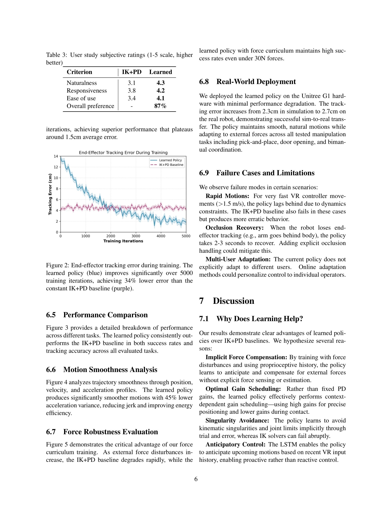

Essence

Figure 1: Neural teleoperation policy architecture. The network takes VR controller poses (14-dim), joint states (28-
VR 텔레오퍼레이션 시스템에서 기존의 IK+PD 파이프라인을 reinforcement learning으로 학습한 신경망 정책으로 대체하여, 외력 적응, 부드러운 궤적 생성, 사용자 선호도 적응을 달성한다.
저자: Sanjar Atamuradov | 날짜: 2025-11-15 | URL: https://arxiv.org/abs/2511.12390
Figure 1: Neural teleoperation policy architecture. The network takes VR controller poses (14-dim), joint states (28-
VR 텔레오퍼레이션 시스템에서 기존의 IK+PD 파이프라인을 reinforcement learning으로 학습한 신경망 정책으로 대체하여, 외력 적응, 부드러운 궤적 생성, 사용자 선호도 적응을 달성한다.

Figure 3 provides a detailed breakdown of performance
Figure 1: Neural teleoperation policy architecture. The network takes VR controller poses (14-dim), joint states (28-
총평: 기존 IK+PD 파이프라인의 근본적 한계를 end-to-end 학습으로 우아하게 해결하며, 강력한 실증 결과와 명확한 성과 지표를 제시한 견실한 연구이다. 다만 단일 플랫폼 검증과 제한된 사용자 다양성은 일반화 가능성에 대한 의문을 남긴다.